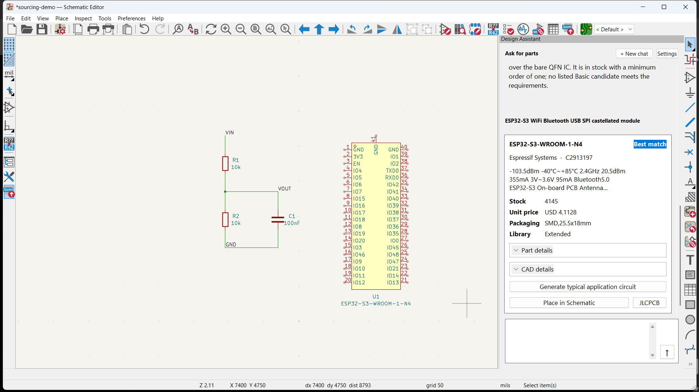

Enlarge ↗Describe what you need. The assistant finds an ESP32 match with stock, price, package, and CAD details.
I'm a Computer Engineering student at UBC, proficient in embedded software and systems. I build across firmware, electronics, and software, and lead engineering at WriteAway. Here are a few of my projects.
Scroll to exploreFrom a component idea to a circuit you can build. I made an AI assistant inside KiCad that finds parts, generates application circuits, and completes a bill of materials.

Enlarge ↗Describe what you need. The assistant finds an ESP32 match with stock, price, package, and CAD details.
A robot you can play pickleball against. I'm developing an autonomous opponent that tracks the ball, positions itself, and swings a paddle to return shots.
AI assistance in a handheld study pen. I founded WriteAway and lead a four-person team bringing the camera, electronics, firmware, and enclosure together into one compact device.
Wireless commands, real-world movement. I built an ESP32-based RC car that can be driven over Bluetooth, bringing embedded control and electronics together in a working vehicle.
A clearer way to see your school week. I built a mobile-friendly calendar that turns a UBC course export into a day or week timetable, with the details of each class a tap away.